Rencontrez
les tourbiers
Tourbier-ière, subst. et adj.
a) Subst. Personne exploitant une tourbière; ouvrier, ouvrière qui procède à l'extraction et à la préparation de la tourbe. "Une obligation générale à tous les tourbiers est de payer patente, à moins, toutefois que le produit de son exploitation ne soit destiné à son seul usage (loi du 15 juillet 1880) même s'il exploite son propre fonds" (F. de Nouvion, L'Exploitation des tourbières, Paris, Albin Michel, 1944, p. 377)
b) Adj. Qui renferme de la tourbe.
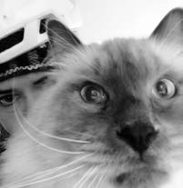
Angela
Doctorante dans un domaine créé par le triomphe de la technique hyperspécialisée.
A participé aux numéros :
#06
Antoine
Encre toutes réalités.
Implication transréaliste.
Solution pour troubles réalitomaniaques et réalismes augmentés. 3000 mL.
Tenir à la vue et à la portée des enfants.
A participé aux numéros :
#02
Arthur
Éternel insatisfait
Tente de percer les mystères de l'univers en regardant voler les hirondelles, quand il ne danse pas la samba.
A participé aux numéros :
#00

il Campa
Le secret pour rester en pleine forme et sculpter le corps de vos rêves ? Rien de plus simple : régalez-vous chaque jour avec un irrésistible plat de pasta Barilla al dente.
A participé aux numéros :
#03
Co
Docteur en Crudités, Ex-Ministre de la Terre
Dévoue sa pratique professionnelle à ce qui n'est pas cuit, c'est-à-dire les sushis et le pisé.
A participé aux numéros :
#00
Fr€ddy Pasta
Rappeur, provocateur, fétichiste indomptable, honte de la scène artistique milanaise. Ses performances combinent des turpitudes dirigées contre les religions, des appels innatendus à l'amour et à la fraternité envers les animaux et des références à la drogue.
A participé aux numéros :
#02
Gösta
Gösta Sträng est un chorégraphe, danseur et professeur de danse-théâtre Suédois diplômé de la Folkwang Universität der Kunste. Depuis Septembre 2022, il est basé à Paris où il débute sa carrière d’interprète et de pédagogue. Il est également diplômé de la London School of Economics (LSE) en Philosophie, Logique et Méthode Scientifique. Il créé en 2023 avec Eva Gonant, architecte HMONP, l’association Territoire.
A participé aux numéros :
#01
#03
#05

Hannah
Palondrome organique
Forte de sa longue traversée du désert de 2020, elle décide d'enquêter sur nos moyens de survie par la recherche de techniques de go et l'engagement à relater les vies rêvées de son existence strictement typographique.
A participé aux numéros :
#00
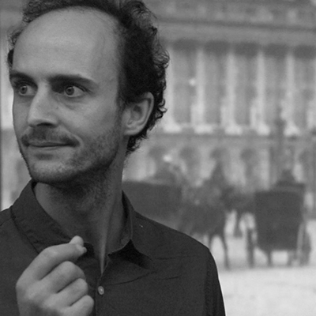
Henri
Architecte graveur et enseignant. Il travaille sur les états limites.
A participé aux numéros :
#05
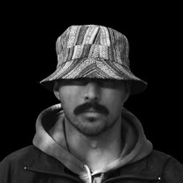
Lena
Diseuse de mauvaise aventures
-café
-carrottes x4
-slips
rdv gynéco: 16h45
+3,50€ cadeau commun pour Magali
code Linkedin : Minette2001**
Mr Lapin de la RATP
Ahmed Itté
A participé aux numéros :
#06
Lilas
L’araignée archive sur sa toile,
La cheminée fume dans les abysses,
L’évènement se fige à l’horizon du trou noir,
De mon côté je note, collectionne et déforme ce genre d’infos.
A participé aux numéros :
#05
Luc
Artisan bricoleur
Chercheur en tohu-bohu, improvisateur cartésien.
A participé aux numéros :
#00
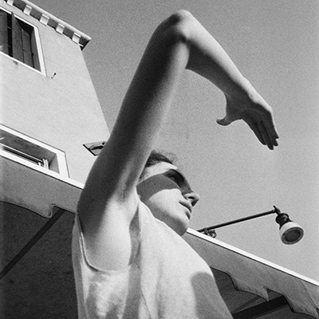
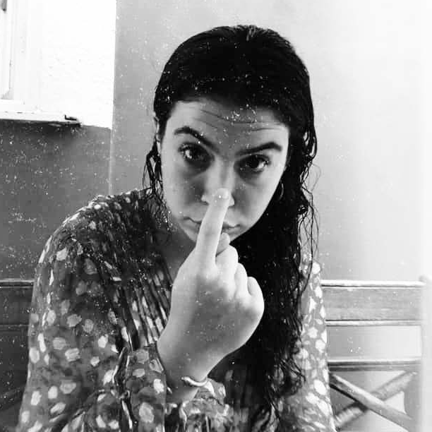
Matéa Narcy
Canary Meat
Nectar Maya
Cayman Tear
Ant any Cream
Mary at Caen
Can Ray Mate ?
A participé aux numéros :
#00
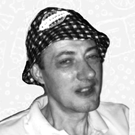
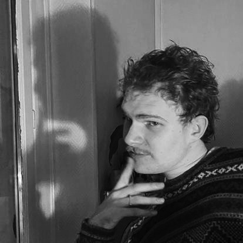
Ro
Professeur de Virtual Reality Phd - University of Kansas, USA
Cette mystérieuse amatrice de bichon maltais enseigne les années 2000 à l'école d'architecture de Paris.
A participé aux numéros :
#00
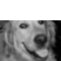
Serge H.
Chien errant
Si vous l'apercevez près de chez vous, c'est que vous habitez loin de chez lui.
A participé aux numéros :
#06
le Texan
Expert en astrophysique, il est le fondateur d'une start-up spécialisée dans les fêtes d'anniversaire pour enfants.
A participé aux numéros :
#02
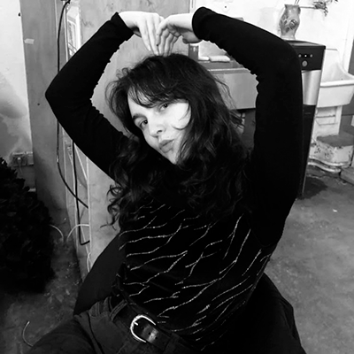
Vincent
Brocanteur mondain
Tiraillé entre vernissages et glanages d'encombrants, il souhaite que tous les paysages soient ferroviaires d'ici à 2050.
A participé aux numéros :
#04
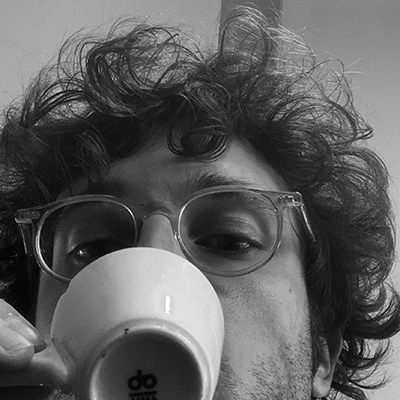
Zadrot
François
Zadro est un penseur et amateur de bricolage à ses heures perdues. La planète où il vivait a disparu à cause de la consommation et de l'orgueil. Ému par la vie sensible de la planète Terre, il plaide pour que cela dure.
A participé aux numéros :
#04
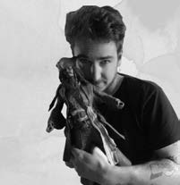